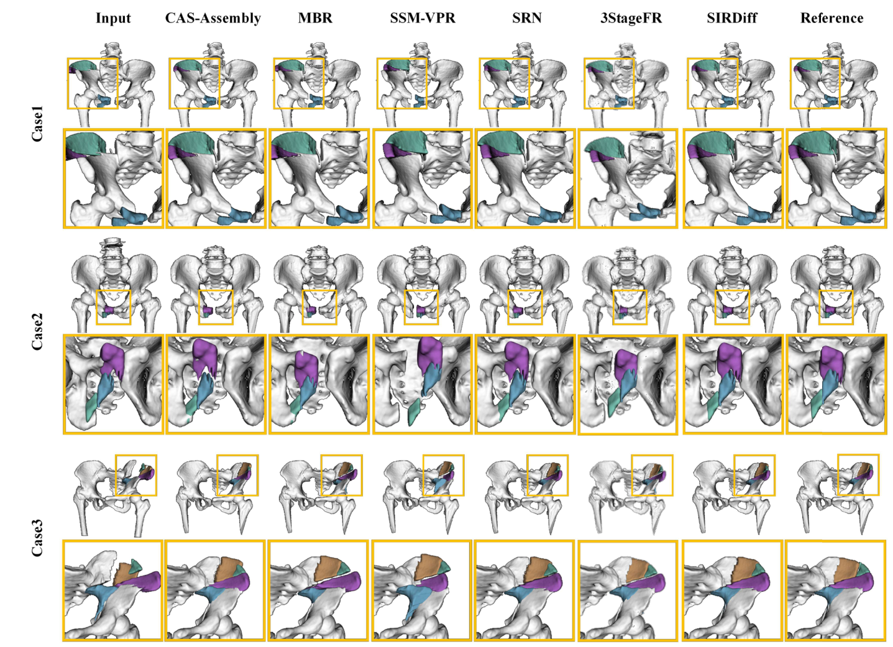
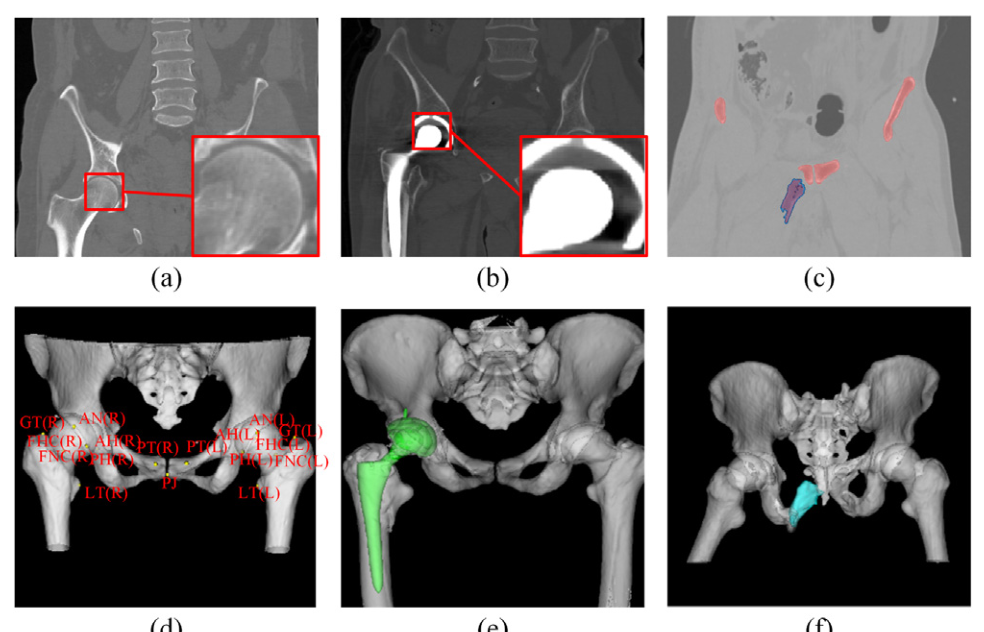

Generative medical imaging
Learning structural and image priors to reconstruct patient-specific anatomy and plausible reference images.
BEIJING INSTITUTE OF TECHNOLOGY
PhD Student · Optical Engineering
I study how generative models can recover patient-specific anatomy from medical images, with a focus on intelligent planning for orthopaedic surgery.
I am a PhD student in the School of Optics and Photonics at Beijing Institute of Technology, supervised by Prof. Jian Yang.
01 / RESEARCH
My research connects anatomical representation, generative modeling, and surgical planning. I am interested in recovering useful anatomical information when observations are incomplete or disrupted by pathology.
Learning structural and image priors to reconstruct patient-specific anatomy and plausible reference images.
Locating anatomical landmarks and modeling structures in challenging CT images with defects and fractures.
Connecting image-based reconstruction with orthopaedic planning, navigation, and system development.
02 / SELECTED PUBLICATIONS


03 / RESEARCH EXPERIENCE
My experience in orthopaedic surgical navigation includes algorithm engineering, functional integration, prototype development, and performance validation.
04 / BACKGROUND
2023 — PRESENT
Beijing Institute of Technology
School of Optics and Photonics · Supervisor: Prof. Jian Yang2022 — 2023
Beijing Institute of Technology
Transitioned to doctoral study2016 — 2020
Beijing Institute of Technology
ACADEMIC ACTIVITIES
Research presentation at the ChinaVR 2026 Outstanding Doctoral Student Forum.
Participant, MARSS 2024 (September 1–7). A summer school endorsed by the MICCAI Society, focused on medical augmented reality.
GET IN TOUCH
For conversations about medical imaging, anatomical modeling, and orthopaedic surgical intelligence.
gavinzhao1997@163.com